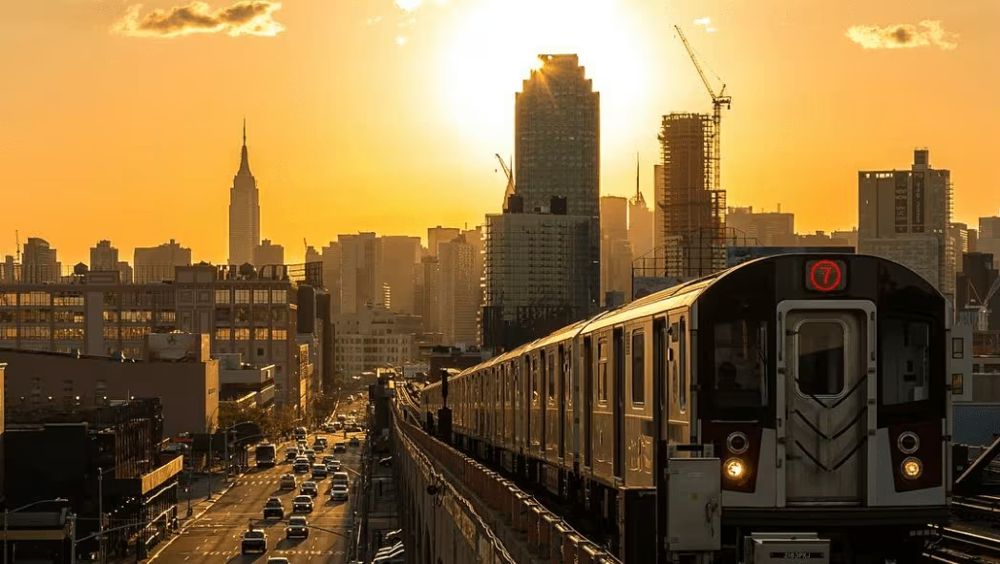

New York, often called New York City is the most populous city in the United States. It is located at the southern tip of New York State on New York Harbor, one of the world's largest natural harbors. The city comprises five boroughs, each coextensive with its respective county. It is the geographical and demographic center of both the Northeast megalopolis and the New York metropolitan area, the largest metropolitan area in the United States by both population and urban area. New York is a global center of finance and commerce, culture, technology,entertainment and media, academics and scientific output, the arts and fashion, and, as home to the headquarters of the United Nations, international diplomacy.

New York City is home to iconic landmarks like the Statue of Liberty, Central Park, and the Empire State Building, along with world-class museums such as the Metropolitan Museum of Art and the 9/11 Memorial & Museum. Visitors can explore Times Square, Broadway, the Brooklyn Bridge, and panoramic observation decks like Top of the Rock
NYC transportation is dominated by the 24/7 subway and bus system managed by the MTA, providing the fastest, most affordable way to travel, typically costing $2.90 per ride. The system relies on OMNY contactless payment, while taxis, ferries, and commuter rails offer alternative, specialized transit options for navigating the five borough
